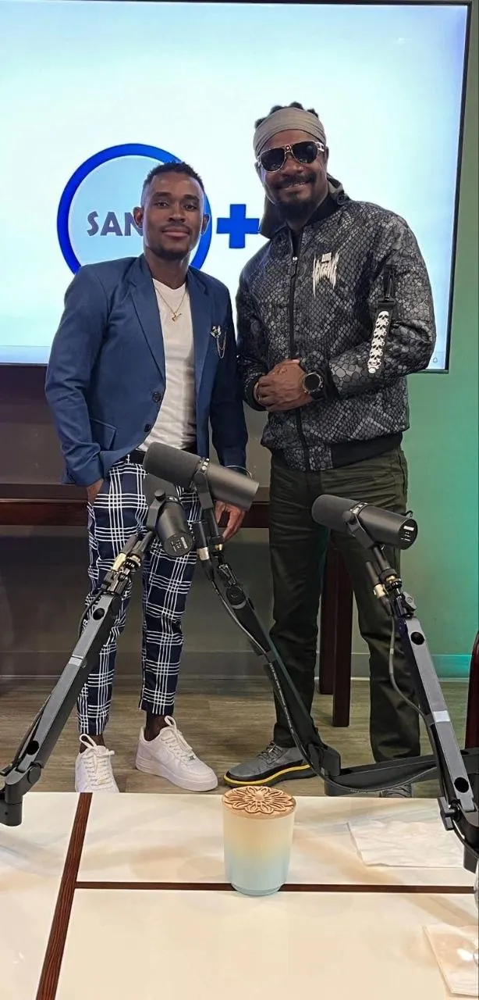
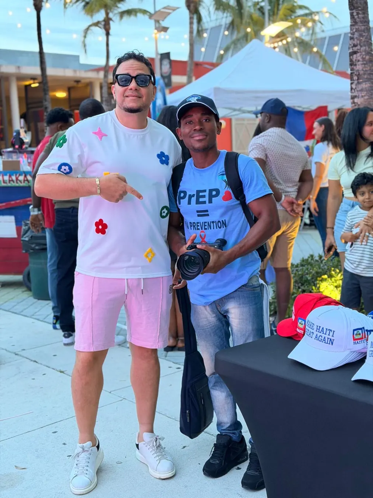
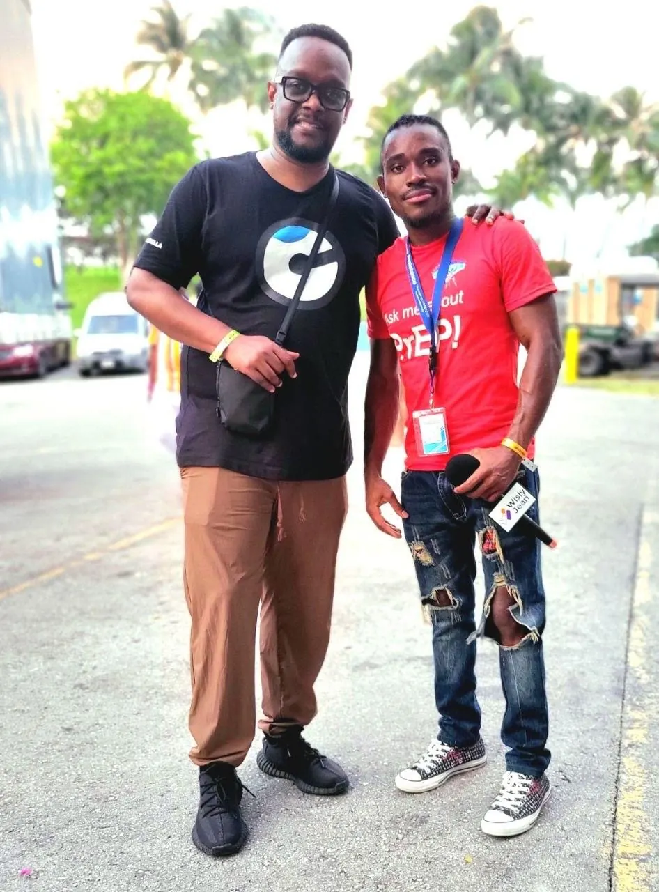
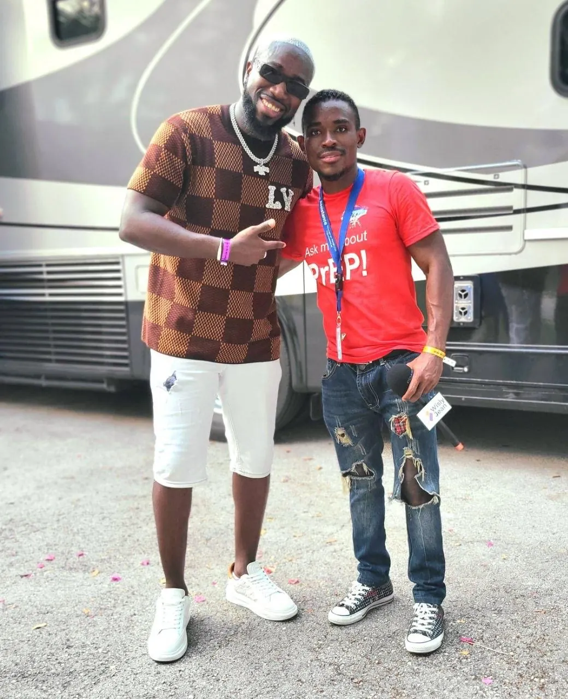
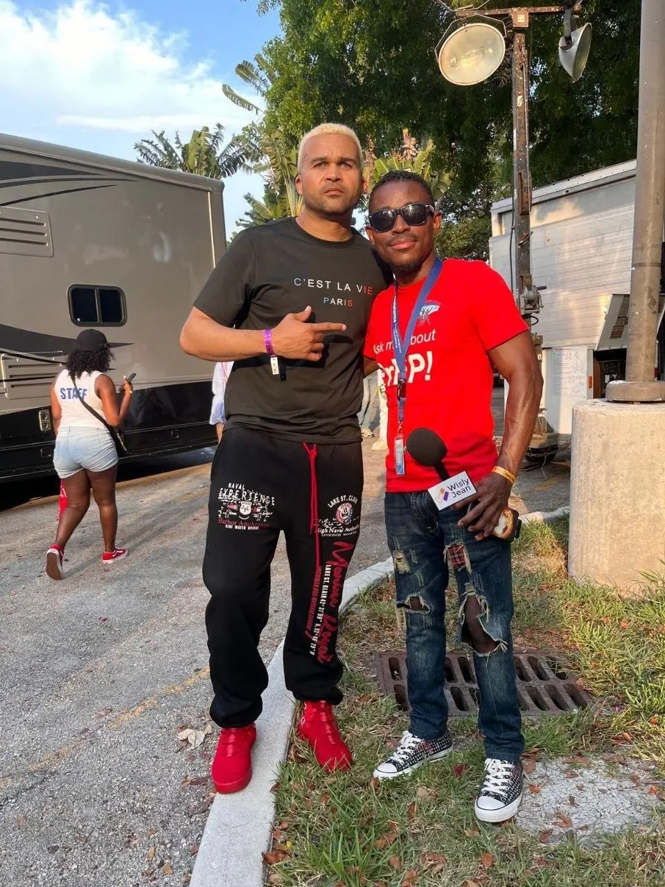
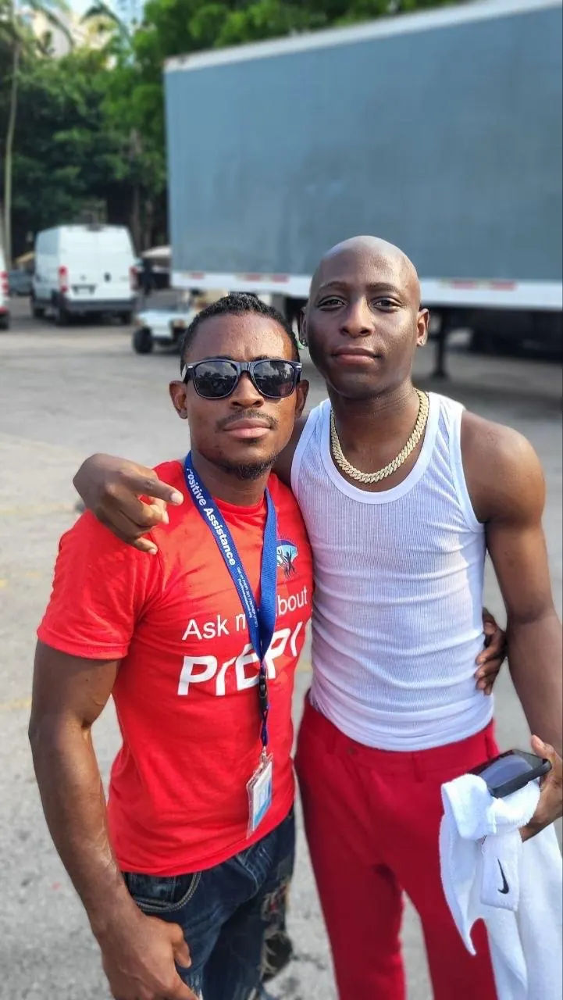
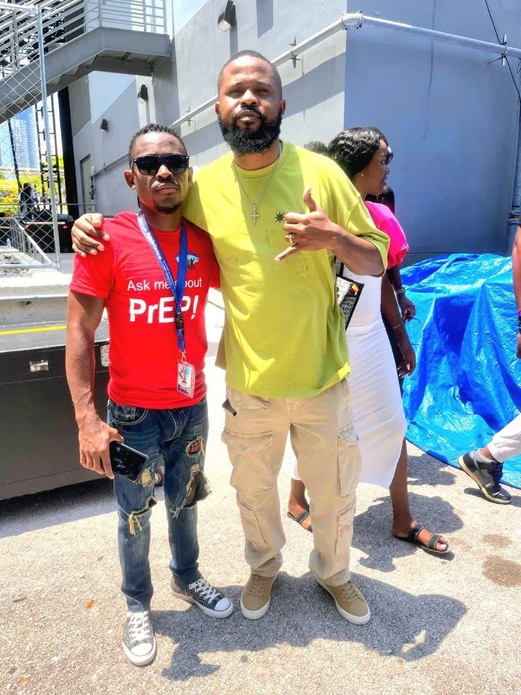

ZOOM-X / PHOTO JOURNAL
Photos from the field.
Interviews, reporting, events and production moments from the Zoom-X photo collection.









Photos shared for the Zoom-X website. People pictured are not presented as clients, partners or endorsers.